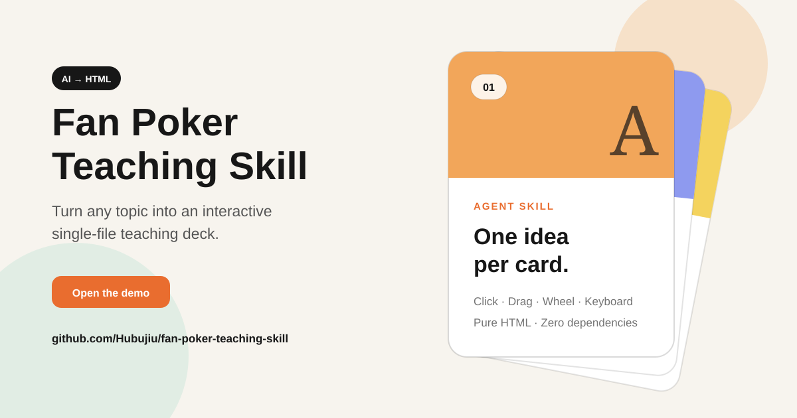

Node 导入不再依赖 HTMLElement、customElements 或 matchMedia 全局变量。
v1.0.3 · Stable Web Component · OIDC Published
一行引入，知识开始翻牌。
动画留在组件里，AI 只生成标题与内容。稳定版支持 SSR 安全导入、明暗主题、运行时卡片 API 和完整无障碍语义。
0 deps零运行时依赖
SSR safeNode 可安全导入
Stable API1.x 兼容合同

组件就在这一页运行。
点击、拖动、滚轮或键盘切牌。当前卡片标题与位置也会通过礼貌 live region 提供给辅助技术。
复制，然后开始写卡片。
固定版本地址适合生产页面，升级由你掌控。
<script type="module"
src="https://cdn.jsdelivr.net/npm/@hubujiu/fan-poker-deck@1.0.3/dist/fan-poker.js">
</script>
<fan-poker card-width="390px" card-height="520px" theme="auto" aria-label="Git 教程">
<fan-card tag="Git" title="工作区" accent="#f2a65a">
工作区保存尚未提交的修改。
</fan-card>
</fan-poker>v1.0.3 的稳定底座。
非当前卡片对辅助技术隐藏，当前标题与位置通过 live region 播报。
npm Trusted Publishing 使用 GitHub OIDC 短期凭证，不再保存长期发布 Token。